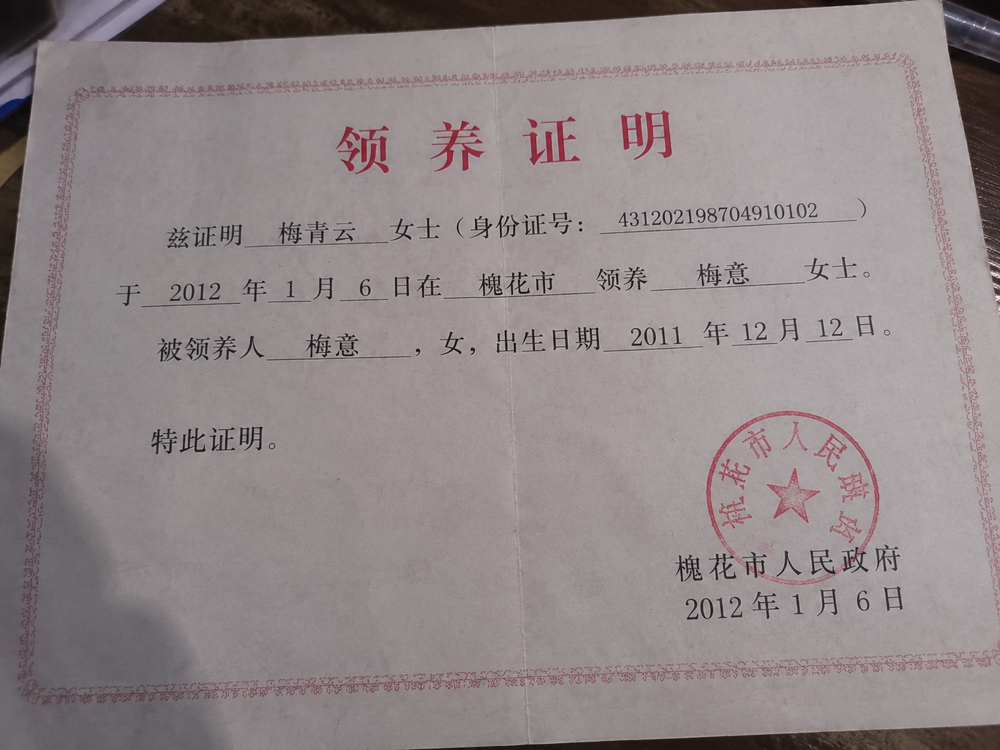

近日，槐花市河洲区人民法院依法对吴中平故意伤害案作出一审公开宣判，被告人吴中平因故意伤害罪被判处死刑。
法院经审理查明，被告人吴中平与妻子李禾（化名）婚姻关系存续期间，长期存在家庭暴力行为。相关调查显示，李禾曾多次遭受殴打、威胁和精神控制，在亲属疏远、求助无门的情况下，曾通过网络平台寻求帮助。2011年4月，河洲路街道工作人员宋远在网络平台发现李禾发布的求助信息后，主动与其取得联系，并协助其寻求法律援助及相关社会救助。
在帮助过程中，宋远多次陪同李禾进行法律咨询，协助其准备相关材料，并帮助其申请保护措施。
据相关人员介绍，宋远在工作中始终关注困难群众的实际需求，对于遭遇家庭困难、权益受到侵害的群众，她总是耐心倾听，积极协调解决问题。据李禾回忆，最初与宋远见面时，自己长期遭受家庭暴力，身心状态十分低落。"她没有问我为什么不早点离开，也没有责怪我。""她只是告诉我，先保护好自己。"
2011年11月5日，李禾与吴中平离婚纠纷处理当天，吴中平因对离婚结果不满，携带刀具出现在相关场所。冲突发生过程中，宋远发现吴中平持刀靠近李禾，立即上前进行阻拦。危急时刻，宋远挡在李禾身前。随后，宋远因伤势过重，经抢救无效去世。
宋远，女，槐花市人，生前系河洲路街道工作人员。同事回忆，宋远参加工作以来，一直负责基层群众服务工作。她性格温和，耐心细致，经常主动帮助遇到困难的群众。"她总说，很多人不是不需要帮助，只是不知道该向哪里求助。"一位曾接受过宋远帮助的群众表示："她不是认识所有人，但她愿意认识每一个需要帮助的人。"
案件发生后，李禾（化名）受到社会各界关注。2011年12月12日，李禾早产诞下一名女婴。由于长期遭受家庭变故影响，李禾身体状况持续恶化，于孩子出生后不久去世。在相关部门协助下，该女婴随后由一名热心人士依法办理收养手续，并得到妥善照顾。

目前，孩子已在新的家庭中健康成长。
河洲区相关负责人表示："社会不会忘记每一个伸出援手的人，也不会忘记宋远同志留下的温暖与责任。"